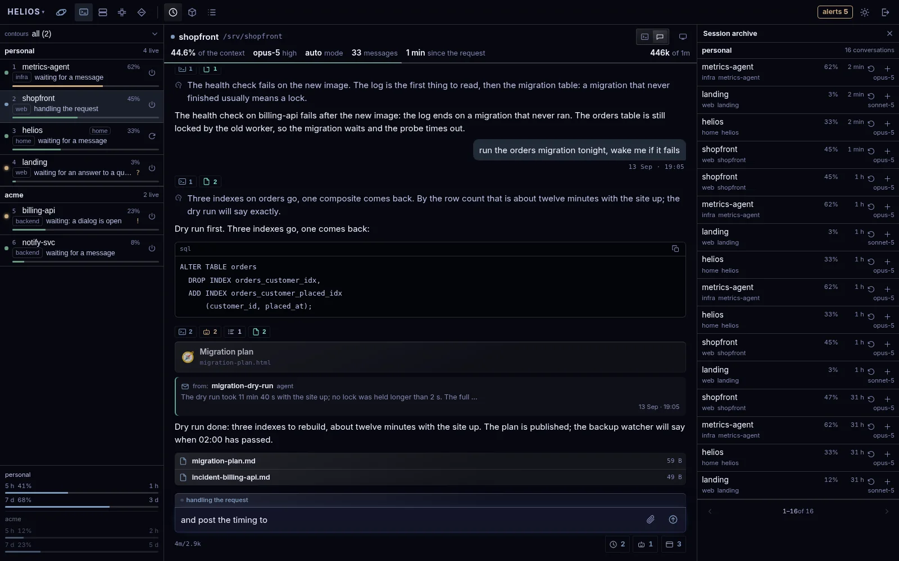
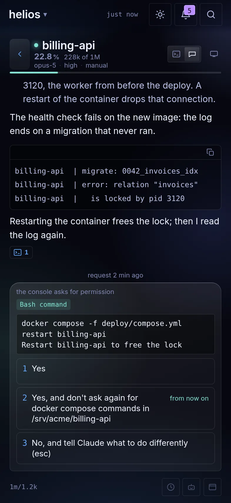

Using the panel
Putting it on a machine is one thing and living with it is another. This page is the second one.
The install is eighteen steps and is written down on its own; here is what comes after it — the map sessions are opened from, what the panel adds to a session, the four ways in, and how to read what the screens show.
The map: contour, group, project
A session is opened from a map of three levels. A contour is one
claude account with a config directory of its own; a group is a shelf
inside it; a project is a directory on disk, a session name and the
parameters to start with. With a single account there is one contour, called
personal, and nothing else has to be arranged.
A contour carries the path prefix its projects live under. Directories the panel finds by walking the disk are offered to the contour whose prefix matches longest; which shelf they go on is yours to say. What is not wanted is hidden from the findings rather than argued with every time.
The card of a contour says how it is authorized — built-in, a token of its own, or a token that was not found — and warns when its settings have drifted from the personal ones: questions from its sessions may not be reaching the panel at all.

Two projects of the same name in different contours want different
session names. A session name is the machine's, not the contour's: tmux keeps one
namespace for all of them. A session started while a namesake is alive comes up as
name-2, and the conversation you were looking for is the other one.
Renaming a contour is safe. The panel asks for one by the identity of its map entry and never by the label on the screen, so the conversations stay where they were.
What a launch carries
A contour and a project each hold the parameters the panel passes claude. The project's are laid over the contour's field by field, and every row on the card says which of the two it came from.
- model, effort
- what the session thinks with; left empty, claude decides. The list is the panel's own, and beside each alias stands the model behind it with the size of its window.
- permission mode
- what the session asks about — below.
- remote control
- claude's own remote control, on only where the map says so: a switch shown as off must not turn itself on at the launch.
- finalize at
- a percentage of the context window. On its own it does nothing: it needs the guard hook in the account.
- environment, arguments
- variables for the session's own environment and extra arguments for claude.
- opening message
- goes out as the first message right after the launch, to a new session and to a resumed one alike.
An opening message set on a contour reaches every project under it. A project that should open into an empty conversation cancels it with an empty one of its own, and the card says the profile intent is cancelled rather than showing nothing.
One case drops it: a session started outside the route its contour holds. The first message would then start work in another account, so it is not sent and the launch report says why.
Permission modes, and the prompt on the phone
The mode a session starts in is a launch parameter, and the panel checks it before the launch: claude is asked whether it takes that mode at all, and one it refuses stops the launch with the answer quoted. A mode that only fails at the first turn would be a session that dies out of sight.
- manual
- the session asks permission for every action.
- edits
- edits to files go without a question, everything else is asked.
- auto
- the classifier decides: part of the actions go without a question.
- plan
- the session looks and reasons, but does not act.
- bypass, no asking
- the session asks about nothing. Neither is offered in the map, and a session running in one wears the badge in alarm colours.
The badge in the conversation header is what the session itself last said, with how long ago it said it. A mode the panel does not know is shown as unknown rather than guessed at.

When the console asks whether it may run something, the same prompt arrives in the feed as a card: the command in full, the three answers numbered as they are numbered on the machine, and the reach of the second one spelled out. Answering here is answering in the console; nothing else is typed into the session on your behalf.
When a session restarts itself
The panel never types into a session by itself, not even to save it from a full context. A watchdog outside would have to guess whether the session can take a keystroke right now, and a guess that lands in an open dialog is an answer given blind.
So the guard lives inside the session as a Stop hook and speaks at
the end of a turn, when nothing can be open: past the threshold the session finalizes what
it was doing and restarts itself through the restart skill. The turn after the block is the
finalization and is never blocked again; a session that ignored it is told again at the end
of its next turn.
The threshold is named in one of two places — in the launch parameters of the
contour or the project, which put AACP_FINALIZE_AT into the session's
environment, or in the project's own claude settings, for a session started by hand. Where
the hook is not installed the field does nothing at all.
A restart keeps the name and the directory and comes back with an empty context; the old conversation stays in the archive and opens from there. The machine's home session is restarted and never closed — it is the one the panel lives beside, and its launch is fixed by its directory and its name. A project session is closed here and opened again from the map instead, because its launch parameters live there: a restart without them would quietly bring it up in another setup, possibly under another account.
What a session gains: the skills
Four skills ship with the panel and are copied into the skills directory of every claude account that should have them. A contour without them is not broken — the session simply does not have the command.
- /restart-session
- restarts the session in place, in the same directory and under the same name.
- /notify
- the session calls the person to it: one line arrives on the phone as a push that opens that very session. It is not a question — nothing waits for an answer and the turn goes on.
- /brief
- the session publishes a long piece with questions in it, which is read in the panel at whatever length it takes; the answers come back to the session as an ordinary message.
- /cross-profile-message
- a message to a session living in another contour. Needed only where there are several accounts.
A brief outlives the conversation that wrote it. It is kept on the host beside the transcripts and swept by age and by count, never by whether its session is still alive: a sweep on a dead session would take the document out from under the person reading it.
What a session gains: the hooks
Two additions to claude are not optional. Without the first the panel is blind to questions, without the second to the subscription.
- the question hook
- a session reports a question only through it: the record of the call reaches the transcript after the answer, so without the hook the card never arrives.
- the status line
- the only place the 5h and 7d percentages are ever said; the script goes first in the chain and passes the payload on to whatever status line was there. The numbers live only while a session is running, and the header shows the age of what it has rather than yesterday's figures.
The rest is convenience for sessions, not the panel's eyes, and each is installed on its own.
- the prompt stamp
- every prompt arrives with today's date, how much context is left, the limits of the account and the load of the machine.
- the cost snapshot
- a line per turn into the account's own log: where the tokens went.
- the context guard
- the restart above.
- the brief reminder
- a session starting in a project where a brief is answered and unsent hears about it, since the session that asked is usually gone by then.
An addition that a script of your own already does is not installed on top: two hooks on one event give two stamps in every message.
Usage: where the tokens went
The numbers are not asked of an API. The panel reads the transcripts on the host and sums them, which is why collection happens on demand and one round at a time: the parsing runs into the processor of the machine being watched. The screen says when it last ran and lets you ask for another round.
In a hand the page reads top down: a contour, a period and a project narrow everything under them; then the three totals — in, out and what the answers came to, with the share the subagents took of each; then one chart by hour or by day; then projects and the busiest conversations. A conversation opens into its own feed from that list.
At a desk the same numbers stand as widgets — by hour, today, cache efficiency, top projects, models and subagents, tools — and a click opens the breakdown behind one. That breakdown drills: contours, then groups, then projects, then conversations, then the directories underneath. A directory that is on no map is not hidden; it is counted apart, as outside the map.
Two of the cuts answer questions the rest cannot. Models and subagents separates what the main conversation spent from what it handed out, so an expensive model reached for by a subagent shows up as that and not as the session. Tools counts calls and the errors among them, which is where a loop shows itself long before the bill does.
Four ways in, and how one is chosen
The panel answers on up to four listeners at once. They carry the same routes; what differs is what guards the door and whether the live session terminal is in the set.
- the main listener
- the address published to the world, usually through a reverse proxy on a domain. Passkey or token.
- the local panel
- on the machine's loopback and nowhere else, so
it lets you in without signing in: the door is checked at the entrance to the listener
— origin, host and
Sec-Fetch-Site. - the local network
- its own address with a real certificate held by the service itself. Passkeys and installing the app work there, which they cannot do over plain http.
- tailscale
- a node inside the tailnet, https without a domain and without a public address. The phone needs the Tailscale app: the node runs in userspace mode inside its own container and is invisible from outside.
After signing in, the client is handed the addresses in order of closeness, measures them and goes for data to the nearest one that answered. The page stays where it was opened — what moves is the address the data comes from. A single failed request does not cross an address out: a probe is sent first, and an address that answers with its own panel stays the base.
Two things stay off unless they are asked for. Tailscale's funnel is never turned on: it would put the session terminal on the open internet. And the terminal itself is not a route on the main listener by default — not "behind a password", simply absent, because behind it is raw input into a live session, that is, a way around the confirmation gate. The panel journals that a terminal was connected to, never the bytes typed in it.
Dictation into the composer
It is off until it is turned on for the device, in settings. The microphone belongs to a browser and not to an account, so a phone that dictates and a desk that does not is an ordinary arrangement. The switch asks for the microphone once, at the moment it goes on, rather than in the middle of the first press.
There is no second button for it. With nothing to send, the send button is a switch: one press starts listening, the next stops it, and what was heard stays in the field to be read over before it goes. With words already in the field it is the send button it has always been — a press sends, and only a press held talks, until the finger comes off. Either way what is heard lands after what is already written.
The recognition is the browser's own, and in Chrome that means the recording goes to Google. It is the one thing here that leaves the machine, the switch says so before it is flipped, and nothing turns it on for you.
Pushes: what arrives, and what does not
A push is a subscription of one browser, made on the device and revoked with it. It needs a secure context, so an address without a certificate has no pushes at all.
What raises one: a session asking a question, calling you to it, publishing a brief, waiting longer than it should, finishing a turn that ran long, or ending; a container that fell or went unhealthy, a whole stack gone dark, a check that stopped answering, a rule tripping its threshold, a subscription burning past its own.
One push when a reason appears and one when it is gone, with no reminders in between. There are no quiet hours and no importance threshold: the only setting is whether the device is subscribed, and repeats are collapsed by the server rather than by the phone.
A push about a session does not go to the device where that session is open right now. The screen marks that it is being watched and the mark goes stale in under a minute, so a phone put down still gets the next one.
The rules themselves travel with the panel and are brought to the database at every start, matched by key rather than by name: a rule renamed keeps the alerts that are already attached to it, and one that leaves is switched off with its history intact. The screen shows them and takes the acknowledgement; changing a threshold is a change to the panel, not a field to edit while the alarm is going.
Where the rest is written
This page is how the panel is used. How it is built, and what it deliberately does not have, is one document; how it is put on a machine is another.